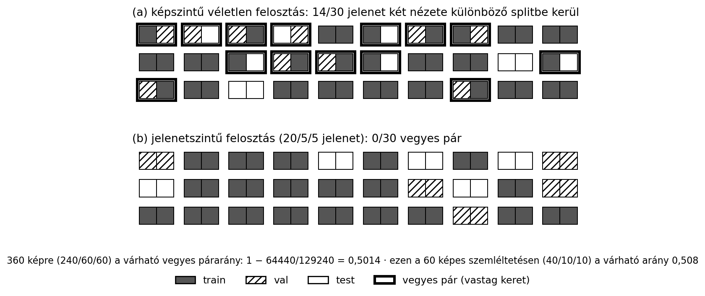

A Projekt II a függelék A. A GlyphLab adatkészlet szakaszában leírt GlyphLab-adatkészlet teljes CNN-osztályozási kísérlete: az adat előkészítésétől a befagyasztott modell végső clean/korrupt tesztjéig. Ez az egység a projektet megnyitó döntéseket rögzíti, mielőtt bármilyen modellt tanítanánk: mi a megfigyelési egység, miért jelenetszintű a split, mi a baseline, mi az erőforráskeret, és milyen manifest igazolja az adat sértetlenségét. Előismeret: a checkpoint- és a tanítási/kiértékelési (train/eval) szerződés a 12.4. III. ellenőrző pont: önállóan tanuló kis háló alfejezetből, az architektúra-döntési lap és a kis saját CNN választása a 20.4. V. ellenőrző pont: indokolt CNN-választás alfejezetből, az osztályarány és a mintavételezés a 21.4. Osztályarány, súlyozás és céleloszlás alfejezetből, a clean/korrupt teszt megkülönböztetése a 22.4. Augmentációs kísérlet és domainváltozás alfejezetből, a szeletek és modellkártya a 23.4. Hibaszeletek és alkalmazási határ alfejezetből, valamint a megbízható CNN-training csomagja a 24.4. VI. ellenőrző pont: megbízható CNN-training alfejezetből. Visszautalunk a konvolúciós operátor NCHW tenzoralak-szerződésére 37.1. Operátorspecifikáció és kézi referencia, a tényleges időmérés követelményére 34.1. Mért késleltetés, throughput és memória és a fél-nyílt dobozkoordinátákra 26.1. Dobozkoordináta, IoU és lokalizációs loss.
Induló kérdés. A 360 GlyphLab-képen egy jelenethez két zajos nézet tartozik. Mi történne, ha a képeket a jelenetekre tekintet nélkül véletlenszerűen osztanánk train/val/test részre? Becslés: a jelenetek nagyjából fele átszivárogna a részek között, tehát a mérés már nem az „új jelenet” hibáját közelítené. A becslést a 38.1.3. szakasz egzakt számpéldával és lemmával ellenőrzi.
Definíció (jelenet, nézet, kép). A GlyphLab adatban a 180 független jelenet halmaza. Minden jelenethez két nézet tartozik, , ezért a képek halmaza:
A kép tenzora
,
NCHW alakban, float32,
intenzitással; a cél
,
ahol 0 vertical, 1 horizontal, 2 diagonal. A metadata index
oszlopa a kép sorszáma a data/images.npy tömb első
tengelyén; a view_id 0 vagy 1, a scene_id
azonosítja a csoportot. A maszk és az xyxy doboz annotáció, nem
osztályozóbemenet; a doboz nullától indexelt, fél-nyílt intervallum,
ahogyan a 26.1. Dobozkoordináta, IoU és lokalizációs
loss is rögzíti.
Definíció (jelenetszintű split). A projekt splitje a jelenetek osztályrétegzett partíciója:
ahol , , , és minden osztályból rendre 40, 10, 10 jelenet kerül a három részbe. A képindexek a splitből származnak:
Így a train/val/test képszám 240/60/60, és minden osztályból 80/20/20
kép jut egy-egy részbe. Egy jelenet mindkét nézete ugyanabban a
splitben van. A clean teszt a data/images.npy azon
60 sora, amely a metadata split=="test" sorainak felel meg;
a corrupt teszt data/corrupted_test.npy sorrendje ugyanez a
metadata-test-sorrend, ezért a
-edik
corrupt kép az
-edik
clean tesztkép rögzített zajos, fényességgradienssel ellátott változata.
A párosítás a 22.4. Augmentációs kísérlet és
domainváltozás alfejezetben bevezetett clean–corrupt szerződés.
Definíció (adatmanifest). A manifest a projekt
adatjegyzéke: verzió, generátorseed, tömbalakok és dtype-ok,
splitdarabszám, valamint a fájlok SHA-256 lenyomata. A hash a teljes
fájlra vonatkozik, nem a tensor tartalmának külön reprezentációjára.
Belső adatnál a jegyzék rögzíti az eredetet (saját generátor); külső
adatnál az alábbi mezőket is kötelezővé tesszük: name,
origin_url, license, license_url,
download_date, preprocessing,
sha256. A GlyphLab projektben külső adat nincs, így az
external_data lista üres.
A megfigyelési egység az 1.3. Adatfelosztás és a
megfigyelési egység értelmében az az objektum, amelynek az
újrafelhasználásakor függetlenséget várunk. Itt ez a
scene_id: a két nézet ugyanannak a geometriának két zajos
megvalósítása, ezért a nézetek nem képezhetnek önálló, független
megfigyelést a train/test-határon át.
A megnevezett felhasználási helyzet (U1). A projekt kérdése zárt, háromosztályú felismerés: egy új, a tanításban nem látott jelenetből érkezik egyetlen zajos -es szürke nézet, és a modellnek meg kell adnia az orientációs osztályt. Ebből a helyzetből következik, hogy a tesztnek az új jelenet hibáját kell mérnie, nem pedig egy már látott jelenet második négyzetét. A jelenetszintű split pontosan ezt a célt reprezentálja; a képszintű split ezt megsérti.
Ellenpélda: nézetszivárgás egy memóriamodellel.
Tegyük fel, hogy egy jelenet view 0 képe a trainben,
view 1 képe a tesztben van. Egy
memóriamodell, amely a tanítóképek minden pixelét és címkéjét eltárolja,
a teszt view 1 képen a látott geometriát azonosíthatja, és
a címkét visszaadhatja. Ez a modell a teszt held-out (visszatartott)
pontosságát felfelé tolja, miközben új jelenetekre nem általánosít. A
hiba tehát nem a használati helyzet kockázatát becsli, hanem a modell
memóriáját.
Számpélda: a kép-szintű felosztás várható szivárgása. Ha a 360 képet a jelenetre tekintet nélkül véletlenszerűen osztjuk 240/60/60 részre, egy rögzített jelenet két nézetének együttes hovatartozása három kedvező esemény összege: mindkettő train, mindkettő val, vagy mindkettő test. Mivel a két nézet konkrét kép, a valószínűség:
Annak valószínűsége, hogy a jelenet két nézete különböző splitbe kerül:
A 180 jelenetre a várhatóan megsértett csoportok száma a várható érték linearitása miatt
Tehát a naiv felosztás várhatóan mintegy 90 jelenetet hasítana ketté, és a teszt már nem lenne „új jelenet” mérés.

Lemma (a jelenetszintű tesztbecslő torzítatlansága). Legyen a teljes tanítási eljárás kimenete, amely csak adataitól függ; legyen a hiba . Tegyük fel, hogy az U1 használati helyzetben a három osztály egyformán valószínű, és minden osztályon belül a tesztjelenetek az osztályfeltételes eloszlásból függetlenül származnak (a jelenet és a nézet együttes eloszlása; a split osztályrétegzett, 10–10–10 jelenet, ezért a becslő az osztályonkénti hibák egyenlő súlyú átlagát becsli, ami egyenletes osztályprior mellett éppen ), a két nézet marginális képeloszlása azonos, és a tesztjelenetek függetlenek a tanítási előzménytől. Az empirikus teszthiba
Ekkor , ahol a train/val előzmény, annak függvénye, és a U1 szerinti valódi várható hiba.
Bizonyítás. Az feltételre rögzített. A tesztjelenetek függetlensége miatt minden és esetén
A nézetek marginális azonossága szerint . A feltételes várható érték linearitásával:
A teljes várható értéket véve : a becslő torzítatlan a tanítási eljárás feletti U1-kockázatra.
A lemma két korlátját ki kell mondani. Egyrészt a nézetek közötti függetlenség nem feltétel a torzítatlansághoz, csak a marginálisok azonossága; ezért a 60 tesztkép nem 60 független megfigyelés. A konfidenciaintervallumot ezért jelenetszintű resamplinggel számoljuk (a resampling alapja a 5.4. Függő képek, seedek és resampling alfejezet), nem képszintű binomiális formulával. Másrészt a lemma feltételezi, hogy a modell kiválasztása nem használta a tesztet; ha a teszt visszahat a választásra, a feltétel megsérül, és a 38.1.7. szakasz tipikus tévedéséhez jutunk.
A 36.4. IX. ellenőrző pont: lektorálható modellállítás lektorálható állításának mintájára a protokollt a kísérlet előtt kell lefagyasztani. A projekt fő kérdése:
A befagyasztott, saját kis CNN clean-teszt-pontossága meghaladja-e a lineáris baseline clean-teszt-pontosságát, és mekkora a clean–corrupt páros romlás?
A döntési táblázat:
| Elem | Befagyasztott döntés |
|---|---|
| Használati helyzet | Új jelenetből egyetlen view, zárt 3 osztály |
| Megfigyelési egység | scene_id |
| Split | 120/30/30 jelenet, osztályrétegzett, minden view egy helyen |
| Modell | A 38.2. Modell, training és best checkpoint
GlyphCNN-je: két
-as
konvolúciós blokk, 32 egységes rejtett réteg, 19 811 paraméter
(,
a 38.2. Modell, training és best checkpoint
rétegenkénti bontása szerint), scratch, CPU; egyetlen forrása a
lab/glyph_models.py |
| Baseline | Lineáris osztályozó: flatten 576 → 3 logit (1731 paraméter), ugyanazzal a tanítási recepttel és választási szabállyal; külön minimum-referencia a képfüggetlen prior ( loss, accuracy) |
| Választási szabály | Futásonként a legkisebb val_loss epoch-snapshot (epochonkénti pillanatkép); architektúránként a három futás közül a legkisebb best val_loss; a választás csak train és val adatot használ |
| Teszt | Egyszer, befagyasztott checkpoint után; clean, majd corrupt páros |
| Seedek | 20261020, 20261021, 20261022 mindkét modellre; a seed-szórás a kísérlet bizonytalanságát mutatja, a rögzített seedek pedig a futások reprodukálhatóságát szolgálják [D02] |
| Elsődleges metrika | Per-view clean accuracy, jelenet-bootstrap CI |
| Másodlagos | Osztályonkénti recall; clean–corrupt páros accuracy-különbség |
A baseline szándékosan a legegyszerűbb értelmes osztályozó. Az U1
képek osztályonkénti intenzitásmintázata lineárisan is
megkülönböztethető lehet, ezért a lineáris modell azt a kérdést teszi
fel, hogy a konvolúciós lokalitás és a nemlinearitás ad-e mérhető
előnyt. A lineáris modell a
pixelt egyetlen vektorba lapítja, utána
logitot számol; ez
paraméter. A projekt CNN-je 19 811 paraméteres, vagyis több mint tízszer
akkora; a két modell kapacitása tehát nem azonos, és az összevetés azt a
kérdést dönti el, hogy a konvolúciós lokalitás, a nemlinearitás és a
nagyobb kapacitás együtt ad-e mérhető előnyt. Ha a
reprezentáció szerkezetét a kapacitástól is el akarjuk választani, egy
kapacitásban illesztett változat (például a 24.4.
VI. ellenőrző pont: megbízható CNN-training 2979 paraméteres
TinyCNN-je, ahol
és
)
külön, előre deklarált harmadik karként vehető fel; ez a jelen
protokollnak nem része.
A magasabb szintű protokollt a labor protocol_n149.json
fájlként menti, protocol_version = 1 jelöléssel. Ha a
modell vagy a baseline a végső teszt előtt megváltozik, az új protokoll
új verziószámot kap, és a régi verzió a naplóban marad; a teszt
megnyitása után a protokoll nem módosítható. Külső adat választása
esetén ugyanez a fájl kötelezően tartalmazza az eredet- és
licencjegyzéket; ennek hiánya a labort elfogadhatatlanná teszi.
A labor célja kettős: egy futtatható ellenőrző és egy
manifest-kimenet. Az alábbi kód nem helyettesíti a kezdőlabor
ellenőrzött lab/ellenorzott_report.json jelentését; a
futtatást a hallgató végzi el, és a kimenetet a projektnaplóhoz
csatolja.
# lab/protocol_check.py
from pathlib import Path
import csv, hashlib, json
import numpy as np
HERE = Path(__file__).resolve().parent
DATA = HERE / "data"
FILE_NAMES = [
"images.npy", "masks.npy", "labels.npy",
"corrupted_test.npy", "metadata.csv",
]
def sha256(path: Path) -> str:
h = hashlib.sha256()
with path.open("rb") as f:
for chunk in iter(lambda: f.read(1 << 20), b""):
h.update(chunk)
return h.hexdigest()
def main() -> None:
manifest = json.loads((DATA / "manifest.json").read_text(encoding="utf-8"))
with (DATA / "metadata.csv").open(newline="", encoding="utf-8") as f:
metadata = list(csv.DictReader(f))
assert len(metadata) == 360, "a metadata.csv-nek 360 rekordot kell tartalmaznia"
required_keys = {
"synthetic", "generator_version", "seed", "scenes_per_class",
"views", "class_names", "input_layout", "input_range",
"independent_unit", "box_convention", "counts", "scene_counts",
"arrays", "sha256", "corrupt_order",
}
missing = required_keys - set(manifest)
assert not missing, f"a manifest hiányzó kulcsai: {sorted(missing)}"
assert manifest["input_layout"] == "NCHW"
assert manifest["independent_unit"] == "scene_id"
assert manifest["views"] == 2 and manifest["scenes_per_class"] == 60
assert manifest["input_range"] == [0, 1]
images = np.load(DATA / "images.npy")
labels = np.load(DATA / "labels.npy")
masks = np.load(DATA / "masks.npy")
corrupt = np.load(DATA / "corrupted_test.npy")
assert images.dtype == np.float32 and images.shape == (360, 1, 24, 24)
assert ((images >= 0.0) & (images <= 1.0)).all()
assert masks.dtype == np.uint8 and masks.shape == (360, 1, 24, 24)
assert set(np.unique(masks)) <= {0, 1}
assert labels.dtype == np.int64 and labels.shape == (360,)
assert set(np.unique(labels)) <= {0, 1, 2}
assert corrupt.dtype == np.float32 and corrupt.shape == (60, 1, 24, 24)
assert np.isfinite(corrupt).all()
# A manifest tömbsémája egyezzen a tényleges tömbökkel.
arrays = {
"images.npy": images, "masks.npy": masks,
"labels.npy": labels, "corrupted_test.npy": corrupt,
}
schema_ok = all(
list(arr.shape) == manifest["arrays"][name]["shape"]
and str(arr.dtype) == manifest["arrays"][name]["dtype"]
for name, arr in arrays.items()
)
for name, arr in arrays.items():
spec = manifest["arrays"][name]
assert list(arr.shape) == spec["shape"], f"alak-eltérés a manifesthez képest: {name}"
assert str(arr.dtype) == spec["dtype"], f"dtype-eltérés a manifesthez képest: {name}"
# A metadata sora a képtömb ugyanazon indexét írja le.
for i, row in enumerate(metadata):
assert int(row["index"]) == i, "a metadata indexének a képindexszel kell egyeznie"
assert int(row["label"]) == int(labels[i])
assert row["split"] in {"train", "val", "test"}
# Jelenetintegritás: minden scene-hez pontosan a két view tartozik,
# egyetlen splitben, egyetlen címkével.
rows_by_scene: dict[str, list[dict[str, str]]] = {}
for row in metadata:
rows_by_scene.setdefault(row["scene_id"], []).append(row)
assert len(rows_by_scene) == 180
scene_flags = []
for scene_id, rows in rows_by_scene.items():
view_ok = {row["view_id"] for row in rows} == {"0", "1"}
split_ok = len({row["split"] for row in rows}) == 1
label_ok = len({row["label"] for row in rows}) == 1
assert view_ok, f"a(z) {scene_id} jelenet nézetei hiányosak"
assert split_ok, f"a(z) {scene_id} jelenet több splitben van"
assert label_ok, f"a(z) {scene_id} jelenet címkéi eltérnek"
scene_flags.append(view_ok and split_ok and label_ok)
scene_integrity = len(scene_flags) == 180 and all(scene_flags)
# Osztályrétegzett jelenetszámok: 40/10/10 minden osztályra.
scene_split = {s: rows[0]["split"] for s, rows in rows_by_scene.items()}
scene_label = {s: rows[0]["label"] for s, rows in rows_by_scene.items()}
counts: dict[str, int] = {}
for split in ("train", "val", "test"):
for cls in ("0", "1", "2"):
counts[f"{split}/class_{cls}"] = sum(
1 for s in rows_by_scene
if scene_split[s] == split and scene_label[s] == cls
)
assert counts == {
"train/class_0": 40, "train/class_1": 40, "train/class_2": 40,
"val/class_0": 10, "val/class_1": 10, "val/class_2": 10,
"test/class_0": 10, "test/class_1": 10, "test/class_2": 10,
}, counts
# A manifest splitdarabszámai egyezzenek a metadata tényleges tartalmával.
metadata_counts = {
split: sum(1 for r in metadata if r["split"] == split)
for split in ("train", "val", "test")
}
metadata_scene_counts = {
split: sum(1 for s in scene_split if scene_split[s] == split)
for split in ("train", "val", "test")
}
counts_ok = (metadata_counts == manifest["counts"]
and metadata_scene_counts == manifest["scene_counts"])
assert metadata_counts == manifest["counts"], (metadata_counts, manifest["counts"])
assert metadata_scene_counts == manifest["scene_counts"], (
metadata_scene_counts, manifest["scene_counts"])
test_meta = [r for r in metadata if r["split"] == "test"]
assert len(test_meta) == 60 == corrupt.shape[0]
# A corrupt sorrend a metadata test sorrendjét követi; ezt a képtartalomból is
# ellenőrizzük: minden corrupt képnek a saját tiszta párja a legközelebbi testkép MSE-ben.
test_idx = np.array([int(r["index"]) for r in test_meta], dtype=np.int64)
clean_te = images[test_idx].reshape(len(test_idx), -1)
corrupt_flat = corrupt.reshape(corrupt.shape[0], -1)
nearest = ((corrupt_flat[:, None, :] - clean_te[None, :, :]) ** 2).sum(
axis=-1).argmin(axis=1)
corrupt_pairing_ok = bool(np.array_equal(nearest, np.arange(len(test_idx))))
assert corrupt_pairing_ok, "a corrupt sorrend nem a metadata test-sorrendje"
# Fájlhash-egyezés a manifesttel.
file_hashes = manifest["sha256"]
found_hashes = {name: sha256(DATA / name) for name in FILE_NAMES}
hash_ok = all(found_hashes[name] == file_hashes[name] for name in FILE_NAMES)
for name in FILE_NAMES:
assert found_hashes[name] == file_hashes[name], f"hash-eltérés: {name}"
manifest_ok = ((len(metadata) == 360) and hash_ok
and schema_ok and counts_ok)
report = {
"manifest_ok": manifest_ok,
"manifest_schema_ok": schema_ok,
"manifest_counts_ok": counts_ok,
"scene_integrity": scene_integrity,
"corrupt_pairing_ok": corrupt_pairing_ok,
"split_counts": counts,
"corrupt_pairs_by": "metadata test order (MSE-legközelebbi tiszta párral ellenőrizve)",
"file_hashes": found_hashes,
"external_data": [],
"protocol_version": 1,
"models": {"cnn": {"class": "GlyphCNN", "params": 19811},
"linear": {"class": "LinearBaseline", "params": 1731}},
"seeds": [20261020, 20261021, 20261022],
"param_budget": 20000,
}
(HERE / "protocol_n149.json").write_text(
json.dumps(report, indent=2, ensure_ascii=False) + "\n",
encoding="utf-8",
)
print("protocol_n149.json: minden ellenőrzés sikeres.")
if __name__ == "__main__":
main()Futtatás és ellenőrzés:
cd lab
python protocol_check.pyEllenőrzött futás (Python 3.12.3, NumPy 2.5.4, CPU; a szkript nem
használ RNG-t, ezért seed nincs): a konzol
protocol_n149.json: minden ellenőrzés sikeres. sort írt, a
jelentésben manifest_ok, manifest_schema_ok,
manifest_counts_ok, scene_integrity és
corrupt_pairing_ok egyaránt true, a
splitdarabszámok pedig osztályonként 40/10/10 (train/val/test).
A manifest-séma a kezdőlabor data/manifest.json
fájljából származik; a szkript a kötelező kulcsok meglétét és az előírt
értékeket (NCHW, scene_id, 2 nézet, osztályonként 60
jelenet,
intenzitástartomány) is ellenőrzi, és hiányzó kulcs esetén
AssertionError-ral, a hiányzó kulcsok felsorolásával áll
meg. Az ellenőrzés nem használ RNG-t és nem igényel GPU-t; minden
művelet CPU-n, fájlolvasás szintjén fut. A kimeneti
protocol_n149.json tartalmazza a fájlonkénti SHA-256
lenyomatot, a splitdarabszámokat és a corrupt-párosítás ellenőrzésének
eredményét (corrupt_pairing_ok), tehát a projekt későbbi
átadásakor az adat sértetlensége újra bizonyítható.
A költségkeret a 34.1. Mért késleltetés, throughput és memória alfejezetben tanult mérési szabályt vetíti vissza a tervezésre: a tényleges futás csak később mérhető, de a választásnak előre rögzített korlátokat kell teljesítenie.
| Erőforrás | Előzetes korlát | Ellenőrzés ideje |
|---|---|---|
| Paraméterszám | legfeljebb 20 000 | modellépítéskor, kapacitásszámlálással |
| Epoch | legfeljebb 30 seedenként | training ciklus |
| Fal-idő | legfeljebb 30 perc seedenként CPU-n | 38.3. Végső teszt és páros korrupció alfejezetben mért, warmuppal (bemelegítő futással) |
| Inferencia batch-memória | legfeljebb 50 MB | profilerrel, batch-csúccsal |
| Test-hozzáférés | egyetlen értékelés befagyasztott modellen | protokoll-audit |
A kiválasztott 19 811 paraméteres CNN float32 súlytárolása ; az AdamW két momentumával ez (paraméter + első + második momentum) körülbelül részösszeg. A meglévő gradiensekkel már további elem is jelen van, azaz azonos dtype mellett legalább elem, ami ilyen állapot; ezen felül aktivációk, workspace és másolatok is kellhetnek, ezért a csúcsmemória becslését külön, mérésből adjuk. Egy 32-es batch bemenete . A köztes aktivációk pontos csúcsát nem becsüljük előre: a 38.3. Végső teszt és páros korrupció profiler méri. A fal-időre itt csak a felső korlátot fagyasztjuk le; a kezdőlabor ellenőrzött jelentése a saját kis CPU-futtatását rögzíti, de abból más gépre nem általánosítunk futásidőt.
A baseline és a CNN ugyanazt a 3 seedet, ugyanazt a train/val/test indexhalmazt és ugyanazt a választási szabályt kapja; az architektúra az egyetlen szándékosan változtatott tényező. Mivel a két modell paraméterszáma (1731 és 19 811) és ezzel a kapacitása eltér, az összehasonlítás a reprezentáció és a kapacitás együttes hatását méri; a tiszta reprezentáció-hatás izolálásához a fent említett, kapacitásban illesztett harmadik kar kellene. Az eljárás kontrollált abban az értelemben, hogy az adat-, split-, seed- és választási feltételek azonosak, és a döntés nem utólag kiválasztott legjobb futtatás.
A leggyakoribb projekt hiba az, hogy a hallgató megnézi a teszt-accuracyt, ezután módosítja az augmentációt vagy a learning rate-et, újra tanít, és az ugyanazon testen kapott jobb értéket jelenti. Az első tesztfutás pillanatában a teszt elveszítette held-out státuszát: az új modell kiválasztása már felhasználta a tesztet, ezért a jelentett pontosság felfelé torzított (optimista). A kiválasztási torzítás 22.4. Augmentációs kísérlet és domainváltozás alfejezetből ismert: több jelölt közül a legjobb mért teszthiba várhatóan kisebb (a pontosság nagyobb) a kiválasztott modell valódi hibájánál, tehát a 0,86-os jelentett pontosság nem általánosítási bizonyíték. A javítás új értékelési ciklus: a választást csak train/val végzi. A már megtekintett tesztpéldák újrasplittelése nem teszi őket újra érintetlenné; a tiszta végső ellenőrzéshez új, addig nem használt adat (új tesztjelenetek) vagy külső protokoll kell, és a régi teszt a naplóban választási adatként szerepel.
F1 (fogalmi, nehézség 1). Definiálja a
scene_id, view_id és index
különbségét a GlyphLab metadata alapján. Magyarázza el, miért a jelenet
a megfigyelési egység, és adjon egy konkrét helyzetet, amelyben a két
nézet nem független. Elvárt beadandó: saját megfogalmazás, tenzoralak és
a nemfüggetlenség egy példája.
F2 (levezetési, nehézség 2). A 180 jelenet 360 képét véletlenszerűen, jelenetre tekintet nélkül osztjuk 240/60/60 részre. Számolja ki egzaktul annak valószínűségét, hogy egy rögzített jelenet két nézete eltérő splitbe kerül, és adja meg a 180 jelenetre várhatóan megsértett csoportok számát. Elvárt: képlet, közbülső számok, értelmezés.
F3 (implementációs, nehézség 2). A
metadata.csv soraiból írjon
check_scene_splits(rows) függvényt, amely visszaad egy
scene_id -> split leképezést, és
ValueError-t dob, ha egy jelenet két különböző splitben
jelenik meg. Bemenet a CSV DictReader listája; numerikus
tolerancia nincs, mert a függvény a split-azonosítókat egzakt
sztringegyezéssel hasonlítja össze. Elvárt: futtatható kód és két
ellenőrző bemenet: egy hibátlan, egy hibás.
F4 (hibakeresési, nehézség 2). Egy hallgató a best checkpointot a test loss minimumánál választja, majd a testen 0,86 pontosságot jelent. Hol a hiba, mi a következménye a mérésre, és mi a minimális javítás? Elvárt: ok, következmény, javítás, visszaellenőrzés.
F5 (kísérleti/transzfer, nehézség 3). Tegyük fel, hogy a projekt új adatszerződésre vált: 900 külső jelenet, jelenetenként 3 nézet, 5 osztály, osztályarány 50/20/15/10/5%. Készítsen előzetes protokollvázlatot: megfigyelési egység, osztályrétegzett split, baseline, metrika, erőforráskorlát, valamint külső adathoz az eredet- és licencjegyzék kötelező mezői. Elvárt: indokolt terv, nem előre megadott győztes.
F1 megoldás. A scene_id egy generált
geometriai jelenetet azonosít; a view_id az adott jelenet
két zajos nézetének 0/1 azonosítója; az index a teljes
images.npy tömb sorindexe, tehát a kép tenzor
első tengelyén fut. A megfigyelési egység azért a jelenet, mert a két
nézet ugyanannak a jelenetnek két zajos renderje, azonos címkével; a
közös geometriai tartalom miatt a nézetek nem független minták, és egy
képszintű split esetén a tesztnézet geometriai információja részben már
a tanításban szerepelne. Ezért a bootstrap és a split csoportosítási
egysége is a jelenet.
F2 megoldás. A jelenet két konkrét képe azonos splitben van, ha mindkettő train, mindkettő val vagy mindkettő test. A megfelelő valószínűségek:
Összegük:
tehát . A várhatóan megsértett jelenetek száma . Kontroll: visszatevéses mintavétellel a határérték lenne, mert a két nézet egymástól függetlenül esne a , illetve arányú részekbe; a visszatevés nélküli, egzakt hipergeometriai érték ettől kissé eltér, , mert az első nézet kivétele után a saját splitje egy képpel kisebb. Ezért , és a várható megsértett jelenetek száma , a 90-nél kissé több. Ha minden kép egyetlen splitbe esne, lenne, ami a képlet határesete.
F3 megoldás.
def check_scene_splits(rows):
scene_to_split = {}
for row in rows:
s = row["scene_id"]
split = row["split"]
old = scene_to_split.setdefault(s, split)
if old != split:
raise ValueError(
f"scene {s} több splitben szerepel: {old!r} és {split!r}"
)
return scene_to_splitEllenőrzés:
ok = [
{"scene_id": "0", "split": "train"},
{"scene_id": "0", "split": "train"},
]
bad = [
{"scene_id": "0", "split": "train"},
{"scene_id": "0", "split": "test"},
]
assert check_scene_splits(ok) == {"0": "train"}
try:
check_scene_splits(bad)
except ValueError as e:
assert "több splitben" in str(e)
else:
raise AssertionError("a hibás esethez ValueError kell")Alakellenőrzés: a bemenet minden rekordja szöveges CSV-mezőket
tartalmaz; a kimenet egy dict, amely 180 jelenetre pontosan
180 kulcsot ad, ha az adat érvényes.
F4 megoldás. Az ok: a checkpointot a teszt loss minimumánál választottuk ki, tehát a tesztet modellválasztásra használtuk. Következmény: a teszt többé nem held-out, mert a kiválasztott modell a teszt zajához is illeszkedik; ezért a jelentett 0,86 pontosság várhatóan optimista, és nem tekinthető független becslésnek. Minimális javítás: a kiválasztást kizárólag a validációs loss (vagy a validációs metrika) minimumára alapozzuk, a tesztet pedig a befagyasztott checkpointon egyszer értékeljük. Visszaellenőrzés: a projektnaplóban a teszt kiértékelése egyetlen, a kiválasztás után rögzített futtatás legyen, és a kiválasztási lépés ne hivatkozzon semmilyen testmetrikára.
F5 megoldásminta. A megfigyelési egység a jelenet
marad; három nézet esetén minden nézet ugyanabba a splitbe kerül, és a
bootstrap szintén jelenetszintű. A split osztályrétegzett: az 5%-os
osztály 900 jelenetből 45 jelenetet ad, ezért 80/10/10-es aránynál a val
és a test 4–5 jelenetet kap; ennél kevesebbel a val/test recall becslése
túl bizonytalan lenne, hiszen 4 jelenetnél egyetlen téves jelenet már 25
százalékponttal mozdítja az osztály recallját. A kiegyensúlyozatlanság
miatt a baseline a többségi osztály prior-accuracyje, a fő metrika pedig
macro-recall vagy osztályonkénti recall, nem csupán overall accuracy. A
modellválasztás val_loss vagy val macro-recall szerint történik; a
tesztet egyszer értékeljük. Erőforrás: CPU, legfeljebb 5000 paraméter és
seedenként legfeljebb 30 epoch; az 5000-es korlát indoka, hogy az 5
osztályos lineáris baseline
paraméter, tehát a korlát a baseline kevesebb mint kétszeresét engedi, a
GlyphCNN 19 811 paraméteres nagyságrendjét kizárja, és a CPU-s futás 30
epoch alatt tartható marad. Külső adathoz a manifest kötelező mezői:
name, origin_url, license,
license_url, download_date,
preprocessing, sha256; ezek hiányában a
kísérlet nem átadható. Alternatíva lehet az egy nézetre redukált alsó
mérés: először view 0-n ellenőrizzük a csővezetéket, majd a teljes
háromnézetes adaton futtatjuk a végső protokollt.
Ellenőrizze a labor után, hogy (1) minden scene_id
mindkét nézete azonos splitben van; (2) a
protocol_n149.json hash-ei egyeznek a manifesttel; (3) a
test split nem szerepel semmilyen választási döntésben; (4)
a baseline és a CNN ugyanazt a jelenet-splitet és seed-sémát használja.
Visszatekintés: a 22.4. Augmentációs kísérlet és
domainváltozás szerint a corrupt teszt csak a befagyasztott modell
után értékelhető; a 26.1. Dobozkoordináta, IoU és
lokalizációs loss szerint a doboz fél-nyílt xyxy, ezért a maszk
befoglaló téglalapját
és
területtel számoljuk; a 34.1. Mért késleltetés,
throughput és memória szerint a fal-időt csak warmup utáni,
ismételt, tényleges mérésből szabad jelenteni.
A Projekt II adatszerződése a GlyphLab 180 jelenetét és 360 nézetét jelenetszintű, osztályrétegzett 120/30/30 splitre bontja. A képszintű véletlen felosztás várhatóan körülbelül 90 jelenetet osztana meg; a lemmában beláttuk, hogy a jelenetszintű tesztbecslő torzítatlan a megnevezett U1 használati helyzetre, ha a modellválasztás nem érinti a tesztet. A labor manifest-ellenőrzőt és SHA-256-jegyzéket készít, baseline-ként 1731 paraméteres lineáris osztályozót rögzít, és CPU-költségkeretet fagyaszt le. A teszt egyszeri, befagyasztott kiértékeléshez tartozik; a teszt-visszacsatolás új ciklust igényel.
A 38.2. Modell, training és best checkpoint a befagyasztott modell pontos rétegsorát, a training ciklust és a best-checkpoint választást valósítja meg az itteni protokoll alapján; a 38.3. Végső teszt és páros korrupció végzi a clean és corrupt teszt páros kiértékelését.
A PyTorch-dokumentáció hivatkozásai a 2.14-es verzióra mutatnak; a hozzáférés dátumát a tétel tartalmazza.